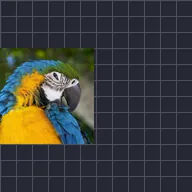

Echo klatek kluczowych

Rysuje kopie warstwy z wcześniejszych chwil, podążając za jej animacją.
Echo z klatkami kluczowymi rysuje kopie warstwy takie, jaka była chwilę wcześniej, więc poruszająca się warstwa zostawia ślad. Sekundy to jak daleko wstecz są kopie, Liczba ile ich jest, Alfa jak widoczne są, a Kompozycja określa, czy stoją Pod spodem warstwą, czy Na wierzchu nią.
Ustawienia
| Ustawienie | Typ | Zakres | Domyślnie |
|---|---|---|---|
| Sekundy | Liczba | Od -60 do 60 | 0.5 |
| Liczba | Liczba | Od 0 do 20 | 1 |
| Alfa | Liczba | Od 0 do 1 | 1 |
| Kompozycja | Wybór | Pod spodem, Na wierzchu | Pod spodem |